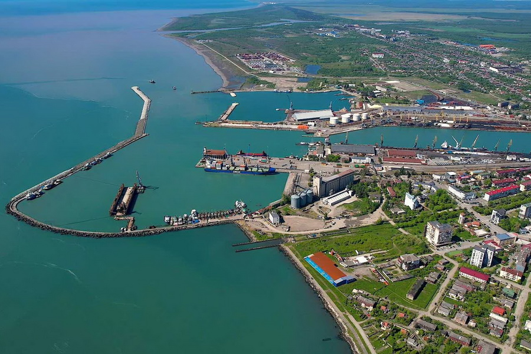

01 // Один проектполный жизненный цикл одного инфраструктурного проекта02 // Событие и уведомленияучастники определяют событие, риски, сроки уведомлений и необходимые доказательства03 // Претензии и задержкикейс переходит к подготовке претензий, требований о продлении сроков и анализу влияния событий на график04 // Решение и споррассматриваются определения Инженера, предупреждение споров и возможные механизмы их разрешения
Логика программы
FIDIC рассматривается как система управления проектом, а не набор отдельных пунктов контракта
Summer School Georgia 2026 объединяет 3 FIDIC сертифицированных тренинга и онлайн-курс BRIDGE Consult по управлению сроками и календарными графиками в единую программу, построенную вокруг реальных контрактных ситуаций инфраструктурных проектов.
Программа последовательно рассматривает весь жизненный цикл контрактной проблемы: от распределения рисков и возникновения события — до подготовки уведомлений, сопровождения претензий, анализа влияния событий на сроки и стоимость проекта, определения Инженера и возможного разрешения спора.
В основу положены реальные кейсы международных проектов, финансируемых международными финансовыми институтами, и практический опыт экспертов программы. Участники анализируют условия контракта, календарный график, фактическое выполнение работ, доказательную базу и контрактные процедуры.
Состав программы
Как устроена программа и в чём её ценность
Программа выстроена как практический разбор полного жизненного цикла одного инфраструктурного проекта: от исходных условий, распределения рисков и возникновения контрактного события до уведомлений, подготовки претензии, анализа задержек, оценки доказательств, определения Инженера и возможного разрешения спора.
Технический визит в порт Поти даёт участникам реальный проектный контекст, а 3 FIDIC сертифицированных тренинга последовательно раскрывают администрирование контракта, претензии и споры, анализ задержек.
Онлайн-программа BRIDGE Consult закрепляет работу с календарными графиками как инструментом планирования, контроля исполнения и обоснования требований о продлении сроков.

01 // Технический визит
Проект развития порта Поти
Выездной модуль показывает, как FIDIC работает на реальном инфраструктурном проекте.
ключевые вызовы реализации проекта и проектные риски
планирование, мониторинг прогресса и контроль исполнения
изменения и администрирование контракта
претензии и контрактные права сторон на практике
обсуждение с позиции Заказчика, Подрядчика и Инженера
02 // Очный тренинг FIDIC Academy
Управление и администрирование контрактов
Ценность: участник видит, как администрировать контракт так, чтобы решения были процедурно корректными и защищали права стороны.
структура контракта и контрактная документация
роли, обязанности и полномочия сторон
уведомления, коммуникации и контрактная переписка
изменения, распределение рисков и платежные процедуры
03 // Очный тренинг FIDIC Academy
Претензии и споры
Ценность: участник понимает, как подготовить, обосновать, оценить и сопровождать претензию до стадии определения Инженера или спора.
претензии Подрядчика и Заказчика
уведомления, контрактные сроки и текущие записи
подготовка и обоснование претензий
определение Инженера, DAB/DAAB и арбитраж
04 // Очный тренинг FIDIC Academy
Анализ задержек
Ценность: участник связывает право на продление сроков, управление графиком, события задержки и стратегию разрешения спора в единую доказательственную позицию.
положения FIDIC 1999 и 2017, связанные со сроками
продление сроков и контрактные права сторон
метод критического пути, анализ влияния событий на сроки и методы анализа задержек
параллельные задержки и мероприятия по ускорению работ
Онлайн // BRIDGE Consult
Онлайн-модуль: эффективное планирование и составление графиков строительных проектов
Доступ к онлайн-курсу BRIDGE Consult предоставляется участникам во время тренинга. Курс закрепляет практические навыки календарного планирования, управления сроками и использования графиков при подготовке требований о продлении сроков выполнения работ.
структура работ, базовый график и актуализация графика
критический путь, резервы времени и мониторинг прогресса
метод освоенного объёма, распределение стоимости и S-кривая
использование графиков при подготовке требований о продлении сроков
Программа по дням
Практическая последовательность очной части
Очная часть включает технический визит в порт Поти и 3 FIDIC сертифицированных тренинга.
Доступ к онлайн-курсу BRIDGE Consult предоставляется участникам во время тренинга.
День 1 // Технический визит
Проект развития порта Поти
Практический выездной модуль, посвящённый анализу реализации крупного инфраструктурного проекта и применению контрактов FIDIC в реальных условиях.
развитие портовой инфраструктуры
ключевые вызовы реализации проекта
планирование, мониторинг прогресса и контроль исполнения
распределение рисков и проектные риски
изменения и администрирование контракта
претензии и контрактные права сторон на практике
уроки реализации инфраструктурных проектов
День 2 // FIDIC Academy
FIDIC: управление и администрирование контрактов
Курс посвящён эффективному управлению контрактами FIDIC на всех этапах реализации проекта — от распределения обязанностей сторон до принятия контрактных решений в сложных проектных ситуациях.
формирование контракта и структура контрактной документации
роли, обязанности и полномочия сторон по контрактам FIDIC
процедуры администрирования контракта
уведомления, коммуникации и контрактная переписка
изменения и управление изменениями
корректировка цены контракта
распределение и управление рисками
платежные процедуры и контрактные права сторон
День 3 // FIDIC Academy
FIDIC: претензии и споры
Курс посвящён подготовке, рассмотрению и оценке претензий, а также современным механизмам предупреждения и разрешения споров по контрактам FIDIC.
претензии по контрактам FIDIC
претензии Подрядчика и Заказчика
уведомления и контрактные сроки
текущие записи и доказательная база
подготовка и обоснование претензий
определение Инженера
процедуры DAB/DAAB
дружественное урегулирование и арбитраж
сравнение процедур рассмотрения претензий в FIDIC 1999 и 2017
День 4 // FIDIC Academy
FIDIC: анализ задержек
Очный тренинг FIDIC Academy для специалистов, работающих с продлением сроков выполнения работ, претензиями по времени и разрешением споров.
положения FIDIC 1999 и 2017, связанные со сроками выполнения работ
управление графиком работ и мониторинг прогресса
события задержки и риски, влияющие на сроки
продление сроков и контрактные права сторон
методы анализа задержек
метод критического пути и анализ влияния событий на сроки
параллельные задержки и мероприятия по ускорению работ
финансовые последствия задержек
использование графиков при рассмотрении претензий и разрешении споров
Особенности программы
Практическая рабочая сессия вместо традиционного лекционного курса
Summer School построена вокруг одного инфраструктурного проекта, который участники разбирают на протяжении всего обучения.
Кейс проходит путь от исходных условий, распределения рисков и структуры контракта до контрактного администрирования, претензий, требований о продлении сроков (EOT), анализа задержек, определений Инженера и разрешения спорных ситуаций.
Как проходит работа
Работа ведётся с позиции разных участников проекта:
Заказчик • Инженер • Подрядчик • Контрактный менеджер • Планировщик • Специалист по претензиям • Консультант по разрешению споров
Традиционных лекций не будет. Основной формат — анализ практического кейса, групповая работа, профессиональная дискуссия, моделирование контрактных ситуаций и разбор последствий принятых решений.
Практические задания предполагают комплексный анализ условий контракта, календарного графика, фактического выполнения работ, доказательной базы и контрактных процедур.
Кейсы участников
При регистрации участники могут указать практические вопросы или кейсы из своей работы, которые они хотели бы обсудить в рамках программы. Наиболее релевантные ситуации будут учтены при подготовке практических заданий и профессиональных дискуссий.
Структура программы
В основу Summer School положены материалы и практические кейсы трёх FIDIC сертифицированных тренингов:
FIDIC Contract Management and Administration Course
FIDIC Claims and Disputes Course
FIDIC Delay Analysis Course
Дополнительно участники получают доступ к онлайн-курсу BRIDGE Consult «Эффективное планирование и составление графиков строительных проектов». Доступ предоставляется во время тренинга.
По итогам программы участники
систематизируют практический опыт применения контрактов FIDIC
совершенствуют подходы к управлению контрактами, изменениями, претензиями и контрактными рисками
отрабатывают практику подготовки, сопровождения и оценки претензий Заказчика и Подрядчика
совершенствуют методы анализа задержек, подготовки требований о продлении сроков выполнения работ (EOT) и применения календарных графиков при рассмотрении претензий
рассматривают современные подходы к предупреждению и разрешению споров
анализируют контрактные ситуации с позиции Заказчика, Подрядчика, Инженера и консультанта по разрешению споров
формируют практическую основу для последующего прохождения международной сертификации FIDIC Credentialing и подтверждения профессиональных компетенций
`r`n
Главный результат программы
Системный подход к управлению контрактными ситуациями
Summer School Georgia 2026 — это программа для специалистов, которые уже работают с контрактами FIDIC и хотят систематизировать практический опыт на более сложном уровне.
Главный фокус — не изучение базовых положений контракта, а разбор реальных контрактных ситуаций.
В этих ситуациях одновременно имеют значение условия договора, распределение рисков, график работ, фактическое исполнение, уведомления, претензии, требования о продлении сроков (EOT), определения Инженера и механизмы предупреждения споров.
Участники будут работать с кейсами как с практическими задачами проекта: анализировать проблему, оценивать доказательства, выбирать контрактную процедуру и обсуждать последствия принятых решений.
Результат программы — развитие практических навыков системного подхода к управлению инфраструктурными контрактами, претензиями, задержками и спорными ситуациями на проектах.
Для кого
Для специалистов, которые уже работают с проектными рисками и контрактными решениями
Программа рассчитана на сопоставимый профессиональный уровень участников, чтобы дискуссия была практической и предметной.
Руководители проектовПредставители ЗаказчиковПодрядчикиИнженеры-консультантыКонтракт-менеджерыСпециалисты по претензиям и спорамПланировщики и управлению сроками и графикамиЮристы строительной отрасли
Для начинающих специалистов
Подготовительный онлайн-тренинг перед Summer School Georgia 2026
Если Вы начинающий специалист и хотите принять участие в Summer School Georgia 2026, 30 июля мы проведём для Вас 6-часовой онлайн-тренинг «Международные контракты FIDIC: формы международных строительных контрактов и основы их применения в Республике Узбекистан».
Тренинг проводится на русском языке с субтитрами на узбекском языке.
Международная команда экспертов
4 международных эксперта высшей профессиональной категории
Эксперты программы участвовали в реализации проектов стоимостью от нескольких миллионов до нескольких миллиардов долларов США и обладают практическим опытом работы в качестве Инженеров FIDIC, консультантов Заказчиков и Подрядчиков, членов DAAB/DAB, адъюдикаторов и специалистов по претензиям, анализу задержек и разрешению споров.
Nino Tsaturova
Грузия · FIDIC Certified Trainer · FIDIC President's List Adjudicator · международный строительный юрист
Один из ведущих экспертов региона по контрактам FIDIC, претензионной работе и разрешению строительных споров. Аккредитованный тренер FIDIC Academy, входит в FIDIC President's List of Adjudicators и представляет одну из ведущих юридических практик Грузии в сфере строительства и инфраструктуры. В 2023 признана Лучшим Тренером FIDIC Academy.
Irakli Khergiani
Грузия · член Правления FIDIC · FIDIC President's List Adjudicator · президент ACEG
Международный эксперт по управлению инфраструктурными проектами и контрактам FIDIC с практическим опытом работы со стороны Заказчика, Инженера и Подрядчика. Руководил реализацией крупных проектов, финансируемых международными финансовыми институтами, и участвует в деятельности советов по спорам и международных арбитражных разбирательствах.
Larisa Belousova
Узбекистан · член Комитета FIDIC по Этике · FCCE · FCCP · MCIArb · DRBF DB Practitioner
Международный эксперт по контрактам FIDIC, закупкам, управлению претензиями и предупреждению споров на инфраструктурных проектах, финансируемых международными финансовыми институтами. Более 15 лет практического опыта сопровождения транспортных, дорожных, аэропортовых и иных инфраструктурных проектов в Центральной Азии.
Sergii Vdovenko
Украина · FCCE · FCCP · FCCM · PhD · профессиональный инженер, Казахстан
Руководитель инфраструктурного проекта «WorleyParsons Uzbekistan», контрактный менеджер проектов, Инженер FIDIC и специалист по управлению претензиями. Более 24 лет опыта реализации промышленных и инфраструктурных проектов в Украине, России, Туркменистане и Узбекистане, включая управление проектированием, строительством, контрактами и проектными командами.
По завершении программы
Три международных сертификата FIDIC Academy
FIDIC сертифицированные тренинги проводятся сертифицированными тренерами FIDIC Academy с выдачей международных сертификатов FIDIC. Сертификаты выдаются в соответствии с правилами и процедурами FIDIC Academy.
Сертификат
Управление и администрирование контрактов
Международный сертификат FIDIC Academy.
Сертификат
Претензии и споры
Международный сертификат FIDIC Academy.
Сертификат
Анализ задержек
Международный сертификат FIDIC Academy.
Сертификат BRIDGE Consult о повышении квалификации «Эффективное планирование и составление графиков строительных проектов» — при успешном прохождении итоговой аттестации. Плюс комплект учебно-методических материалов, практических кейсов и шаблонов документов.
QR-код регистрации
В программу включено
Логистика, обучение и нетворкинг
Проживание и трансферы
раннее заселение с завтраком и 1 ночь в Alliance Palace Batumi
7 ночей в Crowne Plaza Borjomi
завтраки
трансферы в Грузии
Обучение и сертификаты
4 дня очного обучения
технический визит на инфраструктурный проект и посещение строительных объектов
ежедневные кофе-брейки и обеды в учебные дни
учебные материалы
3 международных сертификата FIDIC по сертифицированным тренингам программы
Сертификат BRIDGE Consult о повышении квалификации «Эффективное планирование и составление графиков строительных проектов» — при успешном прохождении итоговой аттестации
Нетворкинг
гала-ужин
Crowne Plaza Borjomi 5*
Место проведения очной части программы и проживания участников — Crowne Plaza Borjomi.
Отель расположен в сердце Боржоми — живописного грузинского курортного города, известного природными источниками, рядом с историческим парком, между холмами и небольшой рекой.
Выездной формат помогает участникам выйти из ежедневной операционной нагрузки — проектов, звонков, переписки и срочных вопросов — и сосредоточиться на программе.
По описанию IHG, Crowne Plaza Borjomi сочетает гостеприимство и близость к природе: 101 номер, конференц-залы, рестораны, wine bar, lobby bar и SPA & Wellness Centre площадью 2400 кв. м.
Правовая информация: Summer School Georgia 2026 включает FIDIC сертифицированные тренинги, проводимые сертифицированными тренерами FIDIC Academy с выдачей международных сертификатов FIDIC. Сертификаты выдаются по соответствующим курсам в соответствии с правилами и процедурами FIDIC Academy. Дополнительная программа Advanced Project Controls / «Эффективное планирование и составление графиков строительных проектов» разработана BRIDGE Consult LLC и не является частью FIDIC сертифицированных тренингов. Все авторские права на стандартные формы контрактов FIDIC, официальные публикации, учебные материалы FIDIC Academy, логотипы и иные объекты интеллектуальной собственности принадлежат Fédération Internationale des Ingénieurs-Conseils (FIDIC) и/или соответствующим правообладателям. Материалы BRIDGE Consult LLC являются интеллектуальной собственностью BRIDGE Consult LLC.